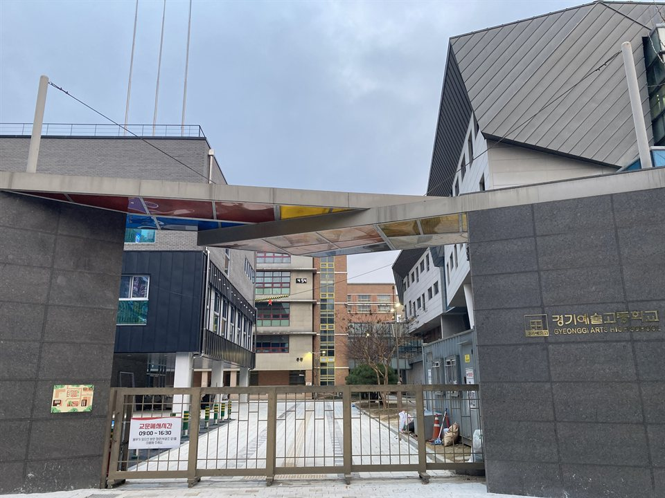

경기 부천 원미구는 관리 중인 학교가 10곳입니다. 상동고등학교·계남고등학교·상원고등학교·역곡고등학교 같은 고등학교와 부천부곡중학교·부천부흥중학교·중흥중학교가 구 안에 모여 있고, 경기예술고등학교처럼 실기와 내신을 함께 준비하는 학교도 있습니다. 학원이 몰려 있는 중동·상동 쪽과, 주택가가 넓게 이어지는 원미동·춘의동 쪽은 통학 동선이 달라서, 학원 시간표가 맞지 않는 학생은 집으로 오는 1:1 영어과외나 수학과외를 따로 찾게 됩니다.
오늘은 원미구로 직접 찾아가는 선생님 10명 중 두 분을 소개합니다. 한 분은 초등 고학년부터 고3까지 영어를 보는 선생님, 한 분은 중등 내신부터 고3 수능까지 이어 주는 수학 선생님입니다.
중동·상동 쪽에서 고등 영어과외를 문법부터 다시 잡아야 할 때 맞는 선생님입니다. 문법 개념을 정확하게 풀어 준 다음, 학생이 그 내용을 자기 입으로 설명할 수 있을 때까지 확인하는 방식으로 수업합니다. 외울 것은 왜 외워야 하는지와 어떻게 외우는 것이 효율적인지를 같이 알려 줍니다.
상위권만 받는 선생님이 아니라 상·중·하위권 모두 수업합니다. 학교 시험 대비로는 기출 문제를 분석해 풀이를 함께 보고, 수행평가와 진로 쪽 영어 준비도 상의해서 진행합니다. 학생마다 공부 성향이 다른 점을 보고 수업 방식을 맞춰 갑니다. 방문과 화상을 모두 하기 때문에 시험 기간에 시간이 어긋나면 화상으로 바꿔 진행할 수 있습니다.
송ㅇ 선생님 상세 프로필 →원미동·춘의동 쪽에서 고1 수학과외로 내신과 수능을 한 선생님에게 이어 맡기고 싶을 때 맞는 선생님입니다. 중1부터 고3까지, 문과와 이과 과목을 모두 수업하고, 하위권부터 상위권까지 지금 학생 수준에서 시작합니다.
15년 동안 중·고등 수학만 가르쳐 온 선생님이라, 학생이 어느 단원에서 막혔고 지금 무엇이 필요한지를 빠르게 잡아내는 편입니다. 수업이 끝나면 모든 학생에 대해 수업 리포트를 남겨 진행 상황을 학부모님과 공유합니다. 부천 상동·중동과 인천 삼산동·부평동 쪽 중·고등학생 수업을 오래 해 왔습니다.
박ㅇ화 선생님 상세 프로필 →학교마다 진도와 시험 범위가 달라서, 학교별로 준비법을 따로 정리해 두었습니다.
👉 원미구 영어과외 선생님 · 원미구 수학과외 선생님 · 관리 학교 10곳 전체 보기
학생 수준에 맞는 선생님을 24시간 안에 추천해 드려요. 상담은 무료입니다.